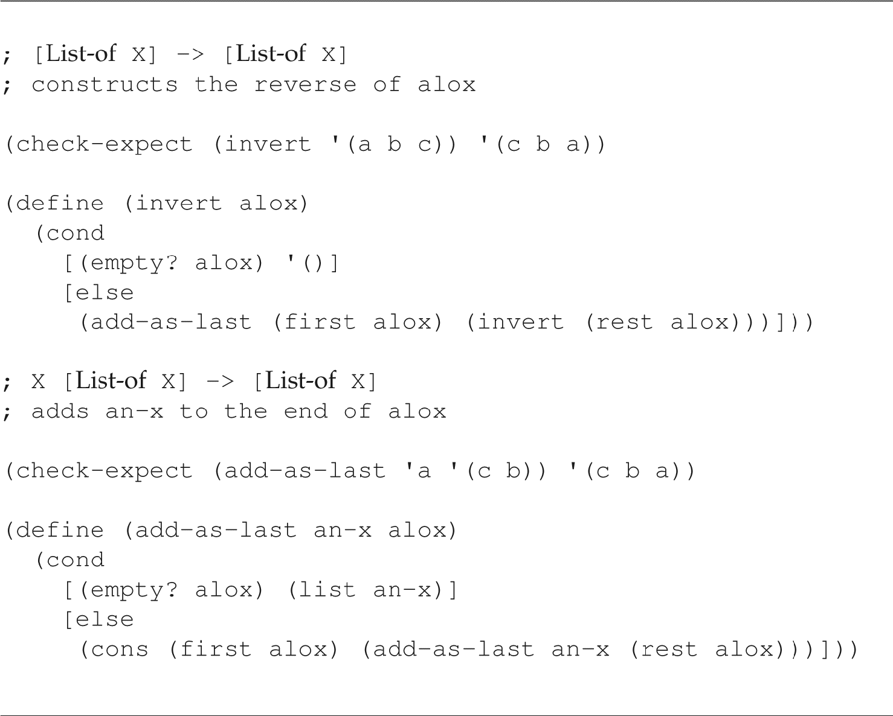

32.1 Recognizing the Need for an Accumulator
Recognizing the need for accumulators is not an easy task. We have seen two reasons, and they are the most prevalent ones. In either case, it is critical that we first built a complete function based on a conventional design recipe. Then we study the function and proceed as follows:
1. If a structurally recursive function traverses the result of its natural recursion with an auxiliary, recursive function, consider the use of an accumulator parameter.
Take a look at the definition of invert in figure 182. The result of the recursive application produces the reverse of the rest of the list. It uses add-as-last to add the first item to this reversed list and thus creates the reverse of the entire list. This second, auxiliary function is also recursive. We have thus identified an accumulator candidate.

Figure 182: Design with accumulators, a structural example
It is now time to study some hand-evaluations, as in chapter 31.1, to see whether an accumulator helps. Consider the following:
(invert '(a b c))
== (add-as-last 'a (invert '(b c)))
== (add-as-last 'a (add-as-last 'b (invert '(c))))
== …
== (add-as-last 'a (add-as-last 'b '(c)))
== (add-as-last 'a '(c b))
== '(c b a)
Stop! Replace the dots with the two missing steps. Then you can see that invert eventually reaches the end of the given list—just like add-as-last—and if it knew which items to put there, there would be no need for the auxiliary function.
2. If we are dealing with a function based on generative recursion, we are faced with a much more difficult task. Our goal must be to understand whether the algorithm can fail to produce a result for inputs for which we expect a result. If so, adding a parameter that accumulates knowledge may help. Because these situations are complex, we defer the discussion of an example to chapter 33.
Exercise 493. Argue that, in the terminology of intermezzo 5, invert consumes O(n2) time when the given list consists of n items. 
Exercise 494. Does the insertion sort> function from chapter 11.3 need an accumulator? If so, why? If not, why not?